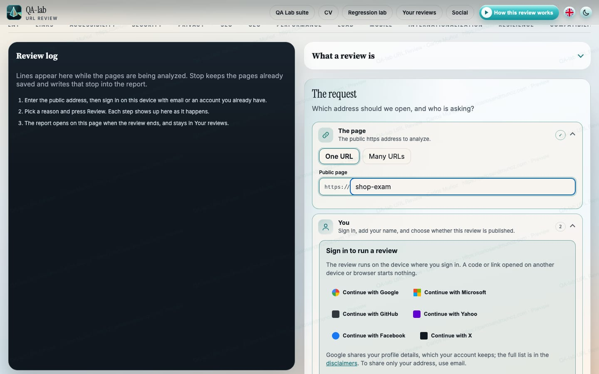
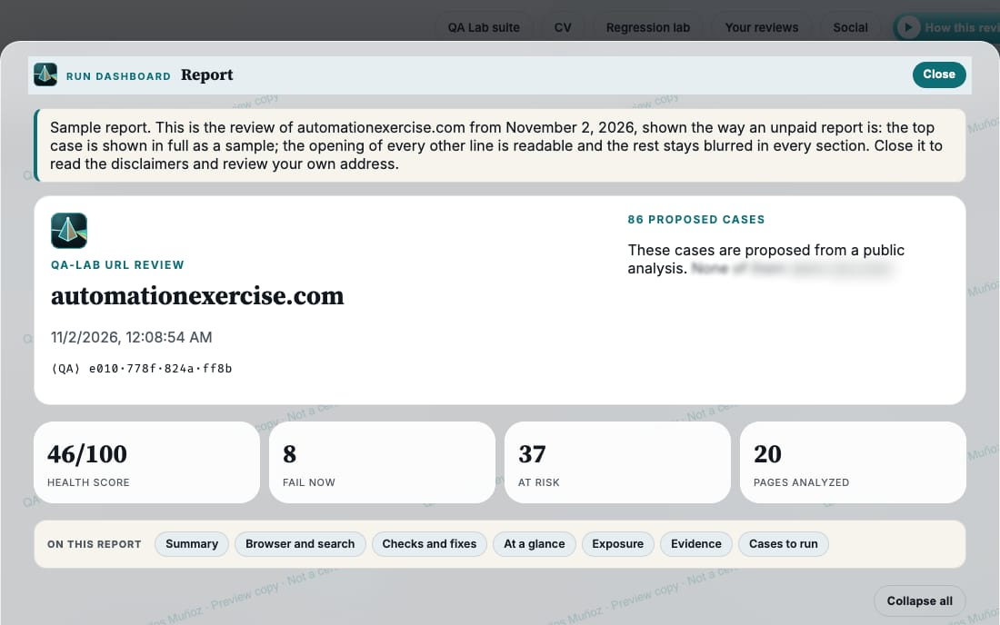
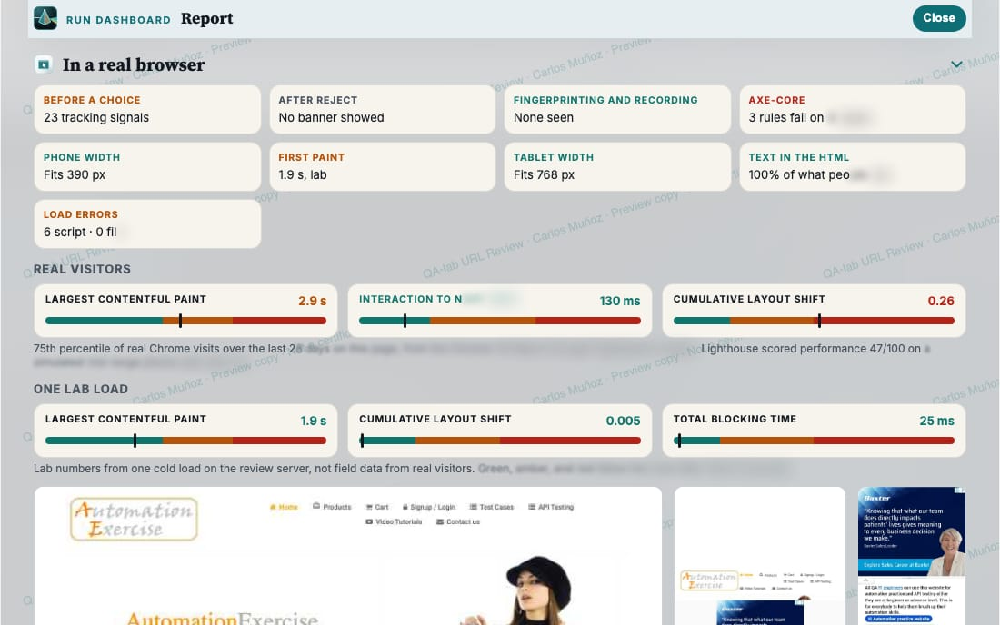
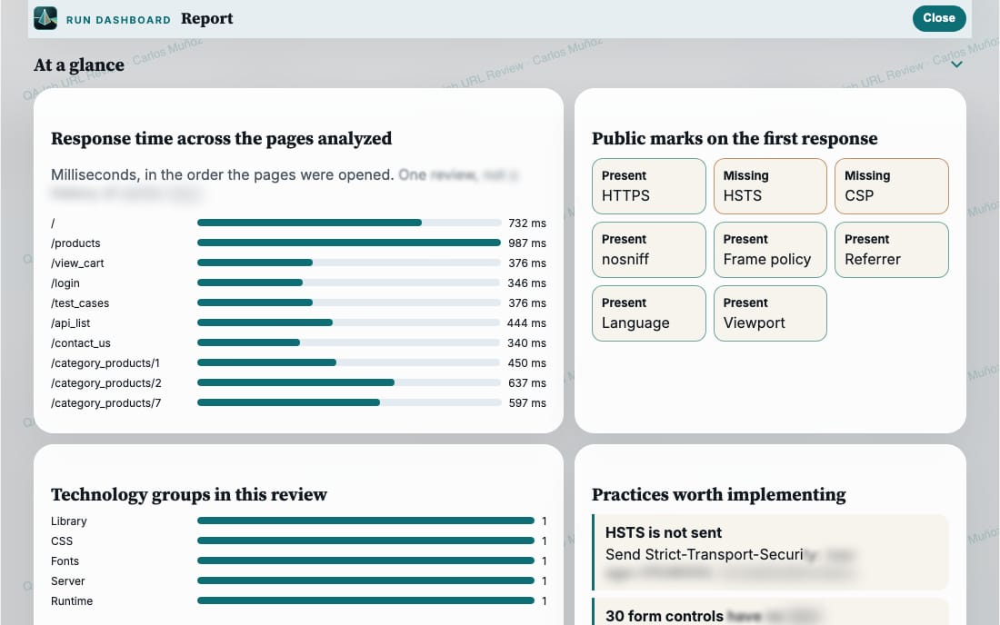
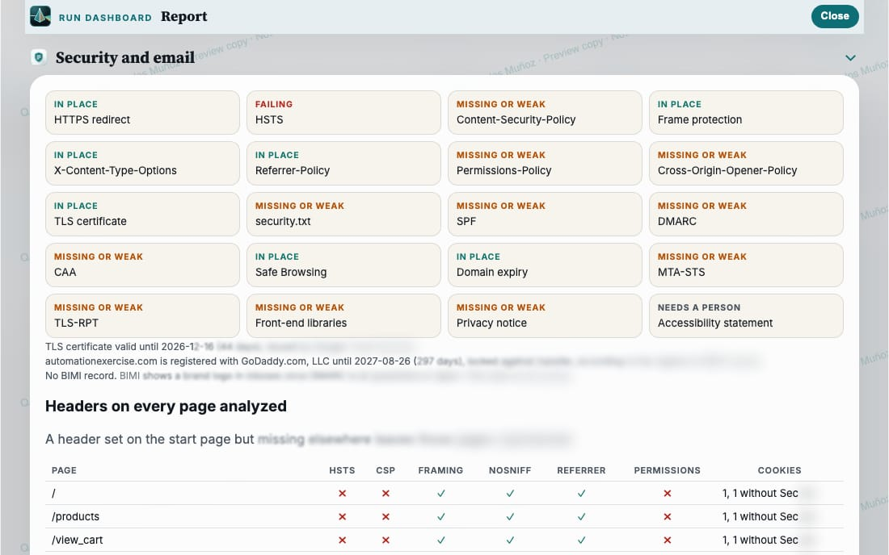
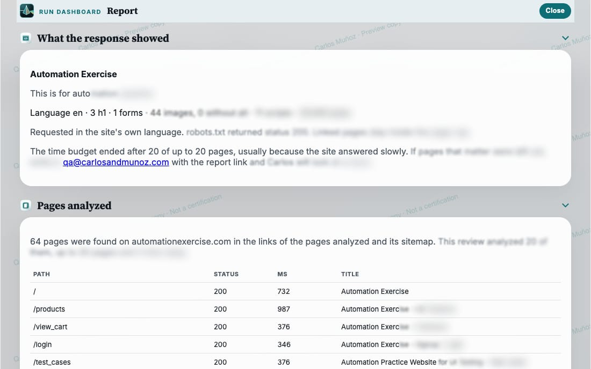
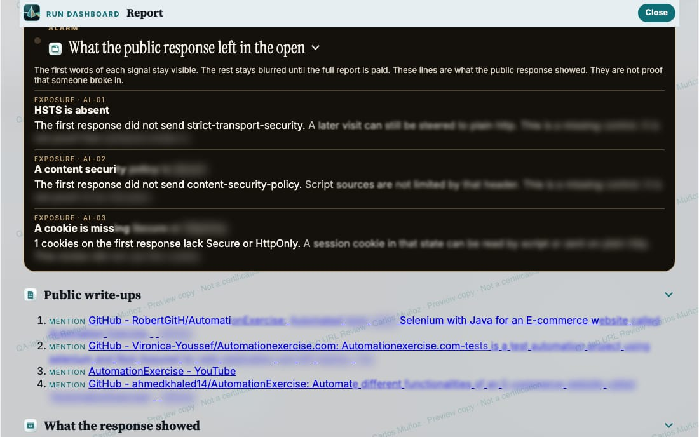
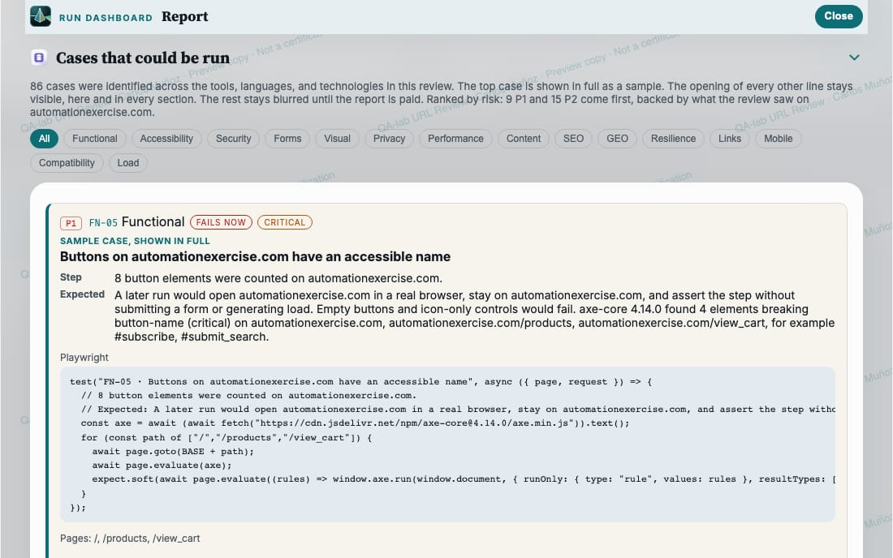
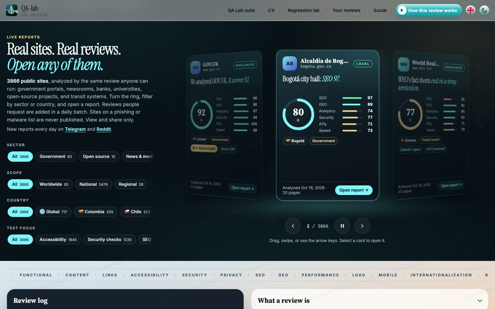

QA-lab URL Review
Explained simply: what the review checks, which tools it uses, where each one runs, and what it is for.
Updated 24 Nov 2026 · for people who are not engineersWhat you will see
Eight short parts
1. The big idea
What the review is, in one minute.
2. Before you start
The address, your choices, the sign-in.
3. The run
The seven stages, in order.
4. The tools
Each tool: what it is, what it does, where it runs.
5. Your data
Who receives what, and how long we keep it.
6. The report
Every section, label and score.
7. Paying and fixing
Prices, fix packages, sharing, Live Reports.
8. What is new
Every change to URL Review, newest first.
The big idea
What the review is, in one minute
Start here
Your website is a shop
A website can look fine from the front.
Behind it there can be slow pages, trackers that run before a visitor says yes, open locks, and mail that lands in spam.
URL Review checks all of that from outside, the way a visitor would.
How it works
Three things you do
Give an address
Any public https address. Up to 20 pages.
We look like a visitor
Page reads and a real browser, from outside the site.
You get a report
Six scores, every finding with its proof, and test cases.
Who it is for
Anyone who has a website
Shop and business owners
Find problems before customers or regulators do.
Marketing teams
Are we easy to find on Google and for AI assistants?
Privacy and legal
Is anything tracking visitors before they say yes?
Agencies
Check a client site and send a clear, dated report.
Testers and QA teams
Ready test cases for 20 test tools.
Security-minded owners
Signs of attacks, exposed files and weak mail setup.
Before you start
The address, the choices, the sign-in
Step 1
Type the address. The box checks it first.
- It suggests well-known sites as you type.
- It asks “Did you mean…?” when a name looks wrong.
- After a slash, it offers real page paths from the site’s sitemap.

Step 1, your choices
You decide how big the review is
How many pages
20 pages are included. Up to 100 if you want more.
How deep
From 2 to 5 links away from the start page.
Only one section
Type shop.example/docs and the review stays under /docs.
Language
English, Spanish, Portuguese, German, French or Italian.
Attack and exploit checks
On by default. One switch turns them off. The form lists what leaves.
Publish or not
Tick “Don’t publish this review” to keep it off Live Reports.
Step 1, sign-in and cookies
Sign in, and what our page stores
Sign in to run it
Email (a 6-digit code or a link, valid 15 minutes, same device). Or Google, Microsoft, GitHub, Yahoo, X or Facebook where they are switched on.
Why: only the signed-in account can open the full report.
Cookie choice on the page
“Keep only what is required”, or “Allow analytics and translation”. Required keeps a device ID and your language.
You can change this choice at any time.
Your reviews shelf
Search your reviews, open several, download them, or delete one with a second click.
Our terms
The terms and the privacy page say what is stored, for how long, and why.
Plain words on the page: qa-review-legal.html.
Real screen recording
Choosing how deep to look
- Pick the number of pages and how deep to go.
- A bigger review shows its price before you pay.
What happens when you press Review
The seven stages, in order
The run, step by step · 1 of 2
Stages 1 to 4: connect, read, look, write
The run, step by step · 2 of 2
Stages 5 to 7: threats, speed, score
Who the review talks to
One review, a few small conversations
Our servers talk to the site you gave, to a browser in Belgium, and to a few public services.
Each service receives only what it needs: usually a domain name, sometimes a list of hostnames or library names.
None of these services receives your password or your form answers.
Watch it work
Seven stages, shown live
The bar moves through the seven stages in order.
Each log line appears as it is written.
A slow site shows “Still working”.
Stop works only from the device that started the review.
If the site blocks our robot
We try another way, then another
Plain request
The first try, like a basic visitor.
Browser-like request
The same page, with the headers a browser sends.
Headless Chrome
A real browser with no window, from Belgium.
Real Chrome window
A minimized Chrome on a trusted operator computer, for sites that block data centres.
The tools, one by one
What each tool is, what it does, where it runs
Group 1 · our own checks · 1 of 2
Checks we run ourselves
Group 1 · our own checks · 2 of 2
More checks we run ourselves
Group 2 · Google services
Google’s services we call
Group 3 · attack and exploit sources · paid detail · 1 of 3
Public attack and bug lists
Group 3 · attack and exploit sources · paid detail · 2 of 3
Public network lists
Group 3 · attack and exploit sources · paid detail · 3 of 3
More public lists and news
Group 4 · security and hacked-site checks · 1 of 2
Security and hacked-site checks
Group 4 · mail and domain checks · 2 of 2
Mail and domain checks
Group 5 · extra tools
Looking around, comparing and asking
Where your data goes
Who receives what, and for how long we keep it
Who receives what · 1 of 3
Outside services and what they get
Who receives what · 2 of 3
Outside services and what they get
Who receives what · 3 of 3
Outside services and what they get
How long we keep it
Records are deleted when their time is up
Review record
12 months after the run.
Account
12 months after your last sign-in.
Sign-in session
30 days.
Logs of failed or stopped reviews
90 days.
Payment record
Kept for tax rules, until 1 January of the sixth year after payment. Without the report.
Unpaid fix requests
12 months after the last change. Paid ones are kept.
Reading the report
Every section, every label, every score
The first page
The summary: a grade and what matters most
- A grade out of 100, and how many checks fail now.
- The biggest risks, the quick wins, and what is already solid.
- The sample is automationexercise.com, a practice site. It scored 46 out of 100.

Browser and search
What a visitor’s browser saw
- Tracking signals before and after the cookie choice.
- Accessibility rule hits, and phone and tablet width.
- Screenshots on desktop, tablet and phone.

At a glance
Speed per page, and the public marks
- The response time of each page the review opened.
- Public security marks on the first response: HTTPS, HSTS, CSP and more.
- Technology groups, and practices worth adopting.

Checks and fixes
Every check has a label
- In place: good, keep it.
- Failing: fix it now. Missing or weak: at risk.
- Needs a person: someone must judge it.

What each label means
The words in the report
In place
The check passed.
Failing
The check fails now. Fix it first.
Missing or weak
It is absent or weak. At risk.
Needs a person
Only a human can decide, for example the wording of a statement.
Not checked
A source did not answer. We say so; we do not guess.
Severity
Critical, high, medium, low or info. It shows how much a finding matters.
Evidence
The proof behind each finding
- Which page, which header, which request.
- What a visitor would see.
- Nothing is guessed. A missing header is not proof of a break-in.

Exposure
Exposed files are checked for owners only
- Files such as .env, .git or backups are checked only after the owner proves the site is theirs.
- Proof is a DNS record, a meta tag on the homepage, or a mailbox on the site’s own domain.
- Anyone else sees a plain “owner only” note.

The six scores
Which tools feed each score
Cases to run
Test cases, written from what we saw
- P1 means do it first, P2 next, P3 later.
- Each case names the real page and the problem.
- A starting script for each of 20 tools. The review never runs them.

Cases in plain words
What the test cases include
A case
One small check that someone repeats step by step.
21 kinds
Functional, accessibility, security, privacy, SEO, GEO, performance, forms and more.
Exports
Excel, Jira, Xray, TestRail, Zephyr, Azure, PDF, JSON and text.
20 tools
Playwright, Cypress, Robot, Selenium, WebdriverIO, Appium, k6, JMeter and more.
A workflow file
A GitHub Actions file that re-runs the chosen tools.
A fix kit
Draft security headers, a Report-Only policy, structured data, llms.txt and security.txt.
Real screen recording
A script for each tool
- Pick the tool you use, and copy its script.
- The script is a starting point your team runs.
Real screen recording
Export the cases for your team
- Excel, Jira, TestRail, Xray and more.
- Download the file, then hand it to your team.
Paying and fixing
Prices, fix packages, sharing, Live Reports
What it costs
The first review is free
First review: free
20 pages, 2 links deep, included.
Fix list: $5
Scores, every finding, and the top 10 fixes in plain words.
Full report: $19
Every case, signal, export and script, for one framework. +$5 per extra framework.
Wider or deeper: $4 to $25
The extra cost is shown before you pay.
Review with a login: $39
Checks behind a login you are allowed to use. This page does not take your password.
Competitor compare: $9 each
The same checks on a rival, side by side.
What it costs · passes and bundles
Passes for 30 days, and bundles per run
Fix it for us
Fixed-price packages
Four ways to fix
Pick the way that suits you
Do it yourself
Use “Ask the report”. A paid report includes one free re-check.
Ask for a quote
We reply within two working days.
Fixed-price package
One price, one job, paid with PayPal.
A 30-minute call
Talk it through with our team.
After the work
Fixed? We check again, free
The work is done
The team marks the package finished.
Free re-review
The same check runs again on the site.
Before and after
An email marks each finding: fixed, still open, or needs a person.
Sharing a report
What a shared link shows
A colleague opens the link
- They see the overall score.
- They see the six scores.
- They see the top finding.
- The rest stays blurred.
The paying account opens it
- Everything is readable.
- All cases and layers.
- Exports and scripts.
- One paid report opens only itself.
Live Reports
Public examples, every day

Real screen recording
How the report is shared
- Copy a link or send it by email.
- The link shows the free view unless the paying account opens it.
What is new
Every change to URL Review, newest first
What is new · 24 Nov 2026 · 1 of 3
Shipped 24 Nov 2026
Rival prices on three fix packages
While launch prices last, accessibility, SEO meta, and performance packages on a paid report name what similar tools charge, in all six languages.
Landing hero leads with AI and local
The URL Review start page headline in all six languages now asks whether AI search can read and cite your site and whether your local profile matches it. The security checkup stays in the paragraph below the headline.
One clear buy on an unpaid report
On a stored report you have not paid for yet, the 5 USD fix list is now the only big button. The full report sits in one line underneath, and local-business reports also name the 9 USD competitor compare.
What is new · 24 Nov 2026 · 2 of 3
Shipped 24 Nov 2026
Freelancer pass vs audit subscriptions
On the account pass card and the Freelancer pay page, one line names SE Ranking Core and Ahrefs Lite monthly prices next to the 29 USD pass. Team and Pro are unchanged.
Outcome packs on the health strip
When a review finds open issues, the unpaid report’s health area shows short commerce, marketing, engagement and security packs with a clear next step—so owners see the business cost of leaving a failure open.
Live keyboard Tab walk
On the lab and review pages, an optional Tab walk follows real focus moves and reports when a modal or dialog lets Tab escape the trap.
Accessibility checklist IDs on findings
Accessibility findings can carry ACT, RGAA, eMAG and related checklist IDs so auditors can map a result to the standard they already use.
What is new · 24 Nov 2026 · 3 of 3
Shipped 24 Nov 2026
Clearer “site did not answer” wording
When TLS opens but the site stays silent, or a handshake aborts on the site’s side, the report says so in plain words instead of sounding like our scanner failed.
Accessibility statement links under Help
Links to accessibility statements stay on help-style paths so they are easy to find and are not mixed into marketing pages.
Report sheet stays solid when open
Opening a report no longer leaves a see-through sheet under the golden look—the content stays readable.
What is new · 21 Nov 2026 · 1 of 2
Shipped 21 Nov 2026
Keyboard-order checks on the start page
The accessibility section now reads the start page’s HTML for keyboard traps and odd tab order: positive tabindex, controls cut out of Tab, click-only elements, modals with nothing to focus or close, inert misuse, hidden-but-focusable controls and unnamed links or buttons. It says what the HTML shows and asks a person to confirm.
Incident-response playbooks
Paid “Was it targeted?” reports show step-by-step playbooks on the page and in the PDF—identify, contain, fix, recover and learn—in English, Spanish and French (German, Italian and Portuguese show English for now), adapted from CERT Société Générale with credit.
Trust grade on the report card
The picture card that goes with a public report on social networks now shows the trust grade letter and points when the report has them.
What is new · 21 Nov 2026 · 2 of 2
Shipped 21 Nov 2026
Deck stays current automatically
Every URL Review change must update this list in the same PR, or say deck: skip. A daily check opens an issue when main moves and the deck does not.
Retention cleanup spelled out
The legal and privacy pages now say how long each kind of record is kept, and that the weekly delete job is still in a dry run—it only counts what would be removed until automatic deletion is turned on.
What is new · 20 Nov 2026
Shipped 20 Nov 2026
Bulk list checks addresses
The list box guesses the right page for each address and checks for address typos, the same way the one-URL box does.
What is new · 19 Nov 2026 · 1 of 4
Shipped 19 Nov 2026
“Was it targeted?”
A new paid section: hosting country, attack and bug sources, severity, and which sources were read or skipped.
Deep attack-source check
A one-off US$19 add-on on a paid report. It reads certificate logs and attack news for the domain, then adds them to the report and PDF.
Threat check in the progress bar
A new stage shows when the public attack lists are read.
What is new · 19 Nov 2026 · 2 of 4
Shipped 19 Nov 2026
Attack switch and consent line
Turn the attack and exploit checks off on the form. The line names what leaves the service.
Evidence PDF
Paid reports: a downloadable proof file for each attack finding.
Owner notice offer
Paid reports: send a critical attack finding to the site owner, in one click.
Passive AI-readiness checks
llms.txt, the AI catalog file, a WebMCP check and a plain-text probe. We only look; we change nothing.
A badge for every section
Fifty faces: each report heading and finding area has its own.
What is new · 19 Nov 2026 · 3 of 4
Shipped 19 Nov 2026
Follow-up box visible
On the review pages, unticked, naming the launch offer.
Stop link in every follow-up note
In six languages, the only way to stop is the stop link.
Legal page checked
The privacy and disclaimers page was checked against the official texts, and it lists the attack sources.
Unpaid fix requests
Kept 12 months after the last change. Paid ones are kept.
Bulk review is easier to start
Free-run accounts can start a batch. The form is checked before Start, and progress shows from the moment Start is pressed.
What is new · 19 Nov 2026 · 4 of 4
Shipped 19 Nov 2026
Security contact file and trust grade
Checks the site’s security.txt file and gives a trust grade, with a ready-to-paste header fix.
Script safety checks
Passive checks: a weak Content Security Policy, scripts that match known-bad code, and third-party scripts with no integrity check.
Carbon, head order and request waterfall
Estimates the page’s carbon footprint, checks the order of tags in the page head, and draws the request waterfall.
Page links and near-copy pages
Across the pages a review opened (at least five), finds pages with few links in and pages with near-identical text.
What is new · 18 Nov 2026
Shipped 18 Nov 2026
DMARC advice reads reports first
The fix now says to check your aggregate reports before raising the enforcement percentage.
Content Security Policy in meta tags
The policy check now also reads a policy set in a meta tag.
What is new · 17 Nov 2026
Shipped 17 Nov 2026
Bulk URL reviews: paste or file
Signed in, paste a list or upload a file. The sites are reviewed one after another as one batch.
Batches on your account page
Your account page lists your bulk batches and reopens any of them.
What is new · 16 Nov 2026
Shipped 16 Nov 2026
Before and after on re-reviews
A re-review shows a before-and-after badge against the run before.
Verified-passing sample test
A generated Playwright sample that passes gets a verified badge.
Runnable test scripts
Some security, function and accessibility test cases now come with a runnable script instead of a stub.
Rate your report
After a review, rate it with stars, a recommend score and an optional quote. A reminder follows.
Full Stack bundles
Starter at US$29 and Complete at US$99, per review run.
AI assistant connector
AI assistants can preview a site and read a report through the QA-lab connector.
What is new · 15 Nov 2026
Shipped 15 Nov 2026
Free one-page preview
Paste a site for a one-page preview with scores. Sign in to unlock the full crawl. Quotas apply.
Shared reports show scores
Shared and anonymous reports now show the scores.
Harder sites get a real-browser retry
Sites that reset the connection, hang up, loop redirects or set cookies now get a review through a real browser.
Words you will see · 1 of 3
Plain meanings
- Address
- The web address you give us.
- Headless Chrome
- A real browser with no window. Robots use it.
- axe-core
- A free rules engine for accessibility.
- WCAG 2.2 AA
- The accessibility standard most laws point to.
- Cookie
- A small note a site stores in your browser.
- Tracker
- A script that follows visitors around the web.
- Consent
- A visitor’s yes or no to tracking.
- Security headers
- Settings a site sends to protect your browser.
- TLS certificate
- Proof that the connection to the site is private.
- SPF, DKIM, DMARC
- Proof that an email really came from the domain.
Words you will see · 2 of 3
Plain meanings, continued
- MTA-STS, BIMI
- Mail settings: encrypted delivery, and a brand logo.
- SEO
- Being easy to find on search engines.
- Lighthouse
- Google’s open tool that scores pages.
- Core Web Vitals
- Google’s measures of loading and stability.
- GEO
- Being easy for AI assistants to read and quote.
- llms.txt
- A short note for AI assistants about the site.
- robots.txt
- A file that tells robots which pages they may visit.
- Sitemap
- A list of a site’s pages for search engines.
- CVE
- A public ID for a known security bug.
- KEV
- The US list of bugs that attackers use now.
Words you will see · 3 of 3
Plain meanings, last ones
- EPSS
- A score for how likely a bug is to be used in an attack.
- Botnet
- Hijacked computers used together for attacks.
- Blocklist
- A list of addresses known to send spam or attack.
- RDAP
- The official online lookup for domain registrations.
- CrUX
- Google’s anonymous data from real Chrome visitors.
- Test case
- One small check someone repeats step by step.
- P1 to P4
- Priority: P1 is the most urgent, P4 the least.
- Exposed file
- A file that should never be public, such as .env.